National Park preserves Biscayne Bay and its offshore barrier reefs with the offshore portion of the park including the northernmost region of the Florida Reef, one of the largest coral reefs in the world
General Information
Dante Fascell Visitor Center:
Open 7 days a week from 9am to 5pm
To Dante Fascell Visitor Center: Get on I-95 N from S Miami Ave. Take FL-836 W, FL-826 S, FL-874 S and Ronald Reagan Turnpike to FL-989 S/SW 112th Ave in Princeton. Take exit 9A from Ronald Reagan Turnpike. Continue on SW 112th Ave. Take SW 107th Ave to SW 328th St.
Overview
Biscayne National Park protects Biscayne Bay and the northernmost reefs of the Florida Reef, one of the largest coral reefs in the world, just south of Miami. About 95 percent of its 172,971 acres is water, so boats are the way to see most of it. The park holds four connected ecosystems: the shoreline mangroves, the shallow waters of the bay, the coral limestone keys, and the offshore reef. It is home to manatees, sea turtles, dolphins, and about 16 endangered or threatened species, and it is only about 35 miles from the busy city of Miami.
The area was protected as a national monument in 1968 and became a national park in 1980. It is a park where the water is the main attraction. People visit to snorkel and dive the reef and shipwrecks, to paddle through mangrove tunnels, to camp on a remote island, and to see the water, sky, and wildlife. Many of its visitors are boaters and anglers from Miami, and the park is also known for the nearby Stiltsville, a cluster of old houses built on stilts on the bay's flats.
Park Sections
The only part of the park on the mainland is Convoy Point, where the Dante Fascell Visitor Center, the dock, and a short walking trail are located. Everything else is reached by boat. Boca Chita Key is the most visited island, with a decorative lighthouse and a harbor, and Elliott Key is the largest, with a campground, harbor, and hiking trail. Jones Lagoon is a shallow mangrove area popular for paddling, and the Maritime Heritage Trail includes mapped shipwrecks. Stiltsville is in the northern part of the bay.
Sightseeing and Exploring the Park
Because there are no roads in the water, sightseeing is on a boat tour. Guided tours leave from Convoy Point and go to Boca Chita Key, where visitors can climb the lighthouse in season, as well as to Elliott Key, Jones Lagoon, and the reef. Glass-bottom boat and heritage tours show the reef without getting wet. Private boaters can follow marked channels to the islands. On the mainland, the Convoy Point jetty and the Jetty Trail offer views of the bay and Miami's skyline. Weather affects all boat trips.
Hiking
Biscayne is not a hiking park, but it has a few easy walks. At Convoy Point, the Jetty Trail is a short, flat walk of about a quarter mile along a rock jetty, with views of the bay and mangroves. On Elliott Key, a 7-mile trail runs along the length of the island through tropical hardwood hammock, and short loops start near the harbor. Boca Chita Key has a small trail around the island. The shorelines have few trails and no shade, so bring sun protection and insect repellent, since mosquitoes can be very bad, especially in summer.
Other Activities
The park is best known for water activities. Snorkeling and scuba diving are offered by the Biscayne National Park Institute and other operators, with trips to the coral reef and to shipwrecks on the Maritime Heritage Trail; see the excursion options below. Other activities include kayaking and canoeing in Jones Lagoon and the mangroves, boating, sailing, fishing with a Florida license, camping on Elliott Key and Boca Chita Key, and ranger programs. Visitors can also take sunset or full moon cruises. There are no cave tours in the park.
Flora and Wildlife
The park's plants include red, black, and white mangroves along the shore, seagrass beds in the bay, and tropical hardwood trees such as gumbo limbo and mahogany on the keys. Underwater, the reef supports hundreds of kinds of fish, corals, and sponges, as well as spiny lobsters. Wildlife includes manatees, bottlenose dolphins, sea turtles, American crocodiles, and nesting and wading birds such as brown pelicans, ospreys, and roseate spoonbills. Manatees are most often seen in winter, and the best chance to see wildlife is on a guided boat trip or paddle.
Access
The park's mainland entrance at Convoy Point is about 9 miles east of Homestead, at the end of SW 328th Street, and about 35 miles south of Miami, a drive of 45 minutes to an hour. Miami International Airport is about 30 miles away. There is no public transportation to the park. Most of the park can be reached only by boat, either with a park concessioner's tour or in your own boat, kayak, or canoe. Boaters need a good chart, since the waters are shallow and the channels are narrow. The park is also close to Everglades National Park and the Florida Keys.
Seasons
The dry season from December to April is the best time to visit, with mild temperatures, lower humidity, fewer mosquitoes, and calmer seas. Winter is also the best time to camp, since mosquitoes are fewer on the keys. Summer is hot and humid, with frequent thunderstorms and many mosquitoes, and hurricane season runs from June to November. Water visibility is best in calm weather, and winter cold fronts can bring wind and rough seas. The park is open year-round, but boat tours and concession services vary by season.
Camping and Lodging
The park has two campgrounds that are reached only by boat: Elliott Key, with about 40 sites, and Boca Chita Key, with about 30 sites, and both are primitive with limited facilities. There is no lodging in the park. Homestead and Florida City, about 20 minutes from Convoy Point, have chain hotels, motels, and campgrounds, such as the Hampton Inn and the Best Western Gateway to the Keys. Key Largo, about 30 minutes south, has resorts and dive lodges, and Miami and Coconut Grove have many hotels about an hour away.
Visitor Centers
The Dante Fascell Visitor Center at Convoy Point is the park's main visitor center. It has exhibits on the bay and reef, a film, an art gallery, a bookstore, and a ticket desk for guided tours, and rangers can advise on boating conditions and camping. Elliott Key has a small ranger station and visitor contact point. Hours vary by season, so check the National Park Service website.
Highlights
- Guided tours from the Biscayne National Park Institute and other operators, including snorkeling and heritage cruises
- Boca Chita Key, the most-visited island, with its ornamental lighthouse and a campground
- Elliott Key, the largest island, with a campground, marina, and hiking trails
- Maritime Heritage Trail, the only underwater archaeological trail in the National Park Service, with mapped shipwrecks that include the popular Mandalay
- Jones Lagoon and Jetty Trail for paddling and a land-based walk
The park is open year-round, and winter is the best time to camp because mosquitoes are fewer on the keys.
Guided Excursions
Biscayne National Park Institute is the official nonprofit partner providing guided eco-adventures within Biscayne National Park. The organization offers a variety of educational and recreational excursions that allow visitors to explore the park's unique marine ecosystems, islands, mangrove forests, coral reefs, and cultural heritage sites. Activities range from sightseeing cruises and island visits to snorkeling, paddling, and full-day adventure experiences.
Most excursions depart from Homestead, Florida, and are led by knowledgeable guides who provide interpretation of the park's natural resources, wildlife, and history. Whether visitors prefer a relaxing boat cruise, an active paddling experience, or an immersive snorkeling adventure, Biscayne National Park Institute offers options suitable for a wide range of interests and activity levels.
Excursion Options
| Excursion | Duration | Starting Price | Description |
|---|---|---|---|
| Heritage of Biscayne Cruise | 3.5 Hours | $83 | Scenic cruise through Biscayne Bay featuring the park's natural and cultural history, with a stop at Boca Chita Key, Elliott Key, or Adams Key. |
| Boca Chita Key Heritage Cruise | 4 Hours | $83 | Boat excursion from Coconut Grove to Boca Chita Key and Stiltsville with historical interpretation. |
| Daily Snorkel Experience | 3.5 Hours | $115 | Guided snorkeling trip to coral reefs, mangrove shorelines, or shipwreck sites. |
| Kayak the Mangroves | 1.5 Hours | $39 | Guided kayaking experience through mangrove forests and seagrass habitats. |
| Jones Lagoon Eco-Paddle | 3.25 Hours | $109 | Paddle adventure through the shallow, clear waters of Jones Lagoon with opportunities for wildlife viewing. |
| Sail, Paddle and Snorkel | 6 Hours | $209 | Full-day adventure combining sailing, paddling, and snorkeling in Biscayne National Park. |
| Snorkel and Paddle Eco-Adventure | 6 Hours | $209 | Combined above-water and underwater exploration featuring snorkeling and paddling activities. |
| Deering Estate Lighthouses Boat Cruise | 4 Hours | $90 | Guided cruise highlighting historic lighthouses and the maritime history of Biscayne Bay. |
Package Experiences
Visitors can also choose from several discounted package experiences that combine multiple activities into a single itinerary.
- Heritage Cruise & Snorkel Debris Cleanup
- Biscayne Heritage Cruise & Paddle Experience
- Kayak Mangroves & Snorkel Experience
- Jones Lagoon & Snorkel Experience
- Discover Biscayne and Everglades multi-park package
Package options typically provide savings ranging from 15% to 25% compared to booking individual excursions separately.
Average Pricing
| Activity Type | Average Starting Price |
|---|---|
| Boat Cruises | Approximately $85 per person |
| Paddling & Kayaking Experiences | Approximately $74 per person |
| Snorkeling-Focused Excursions | Approximately $162 per person |
| Full-Day Combination Adventures | Approximately $209 per person |
| Overall Average Across Major Excursions | Approximately $117 per person |
Most Popular Experiences for First-Time Visitors
- Daily Snorkel Experience for exploring coral reefs, fish, and marine habitats.
- Heritage of Biscayne Cruise for a relaxing introduction to the park's islands and history.
- Sail, Paddle and Snorkel for a comprehensive full-day adventure featuring multiple ways to experience the park.
This article uses material from the Wikipedia article "Biscayne National Park", nps.gov, the Biscayne National Park Institute, and the NPS guided tours page, released under the Creative Commons Attribution-Share-Alike License 3.0. Additional information comes from the National Park Service Biscayne National Park website.
Featured Locations

Jeff P from Berkeley, CA, USA, CC BY 2.0, via Wikimedia Commons; Image Size Adjusted
.jpg){kind=link}
Biscayne National Park Guided Tours
Guided boat excursions that explore coral reefs, mangrove forests, historic islands, wildlife habitats, shipwreck sites, and other remarkable natural and cultural features accessible primarily by water.
Jeff P from Berkeley, CA, USA, CC BY 2.0, via Wikimedia Commons; Image Size Adjusted
Boca Chita Key
Small boat-access island featuring a historic ornamental lighthouse, harbor, picnic areas, waterfront views, campground, and short walking trail.
Judd Patterson, National Park Service, Public domain, via Wikimedia Commons; Image Size Adjusted

Boca Chita Lighthouse
A picturesque ornamental lighthouse standing on a small island surrounded by turquoise waters, historic structures, palm trees, and some of the most iconic scenery in the national park.
Jeff P from Berkeley, CA, USA, CC BY 2.0, via Wikimedia Commons; Image Size Adjusted
Elliott Key
Largest island in the park featuring a campground, marina, hiking trails, picnic areas, wildlife viewing, and historic remnants of an early pioneer community.
Jeff P from Berkeley, CA, USA, CC BY 2.0, via Wikimedia Commons; Image Size Adjusted
Jetty Trail
Short waterfront walking trail featuring mangrove habitats, scenic bay views, fishing opportunities, wildlife observation areas, and access to one of the most picturesque shorelines in the national park.
Jeff P from Berkeley, CA, USA, CC BY 2.0, via Wikimedia Commons; Image Size Adjusted
Jones Lagoon
A shallow coastal lagoon surrounded by mangrove forests and seagrass beds, known for its exceptional wildlife viewing, paddling opportunities, and crystal-clear waters.
Jeff P from Berkeley, CA, USA, CC BY 2.0, via Wikimedia Commons; Image Size Adjusted
Maritime Heritage Trail
Mapped series of historic shipwreck sites and a lighthouse that can be explored by boat, snorkeling, or scuba diving to experience maritime history preserved underwater.
Stiltsville
A small collection of historic wooden houses built on pilings above shallow coastal waters, preserving a unique chapter of maritime and recreational history.
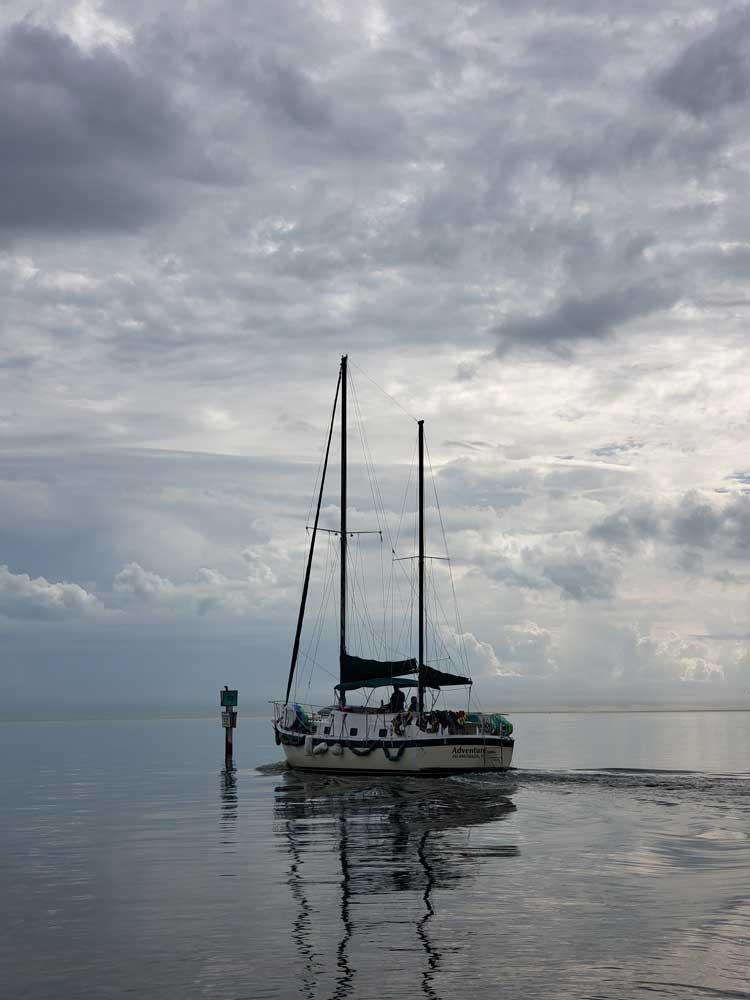
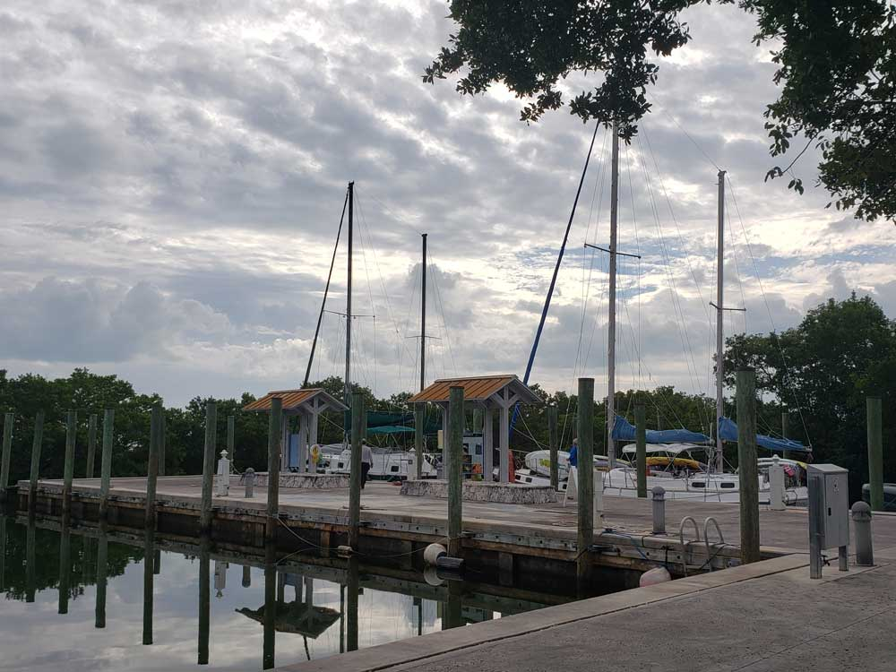
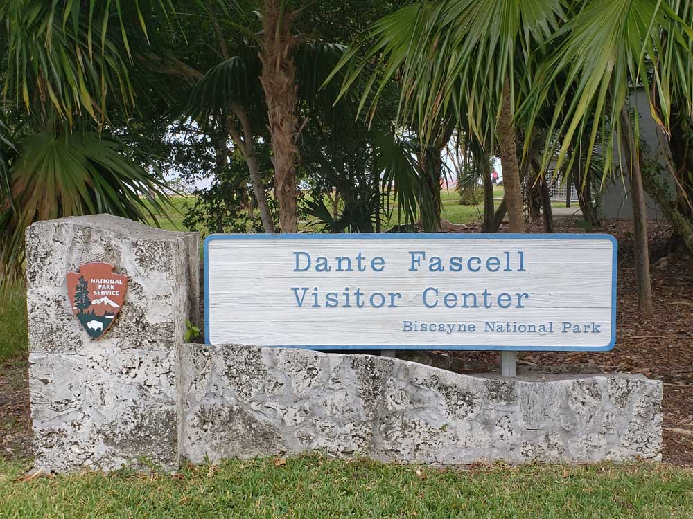
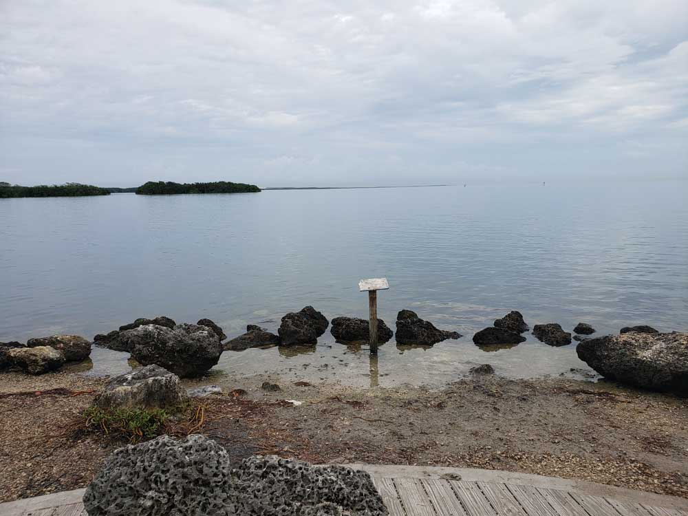
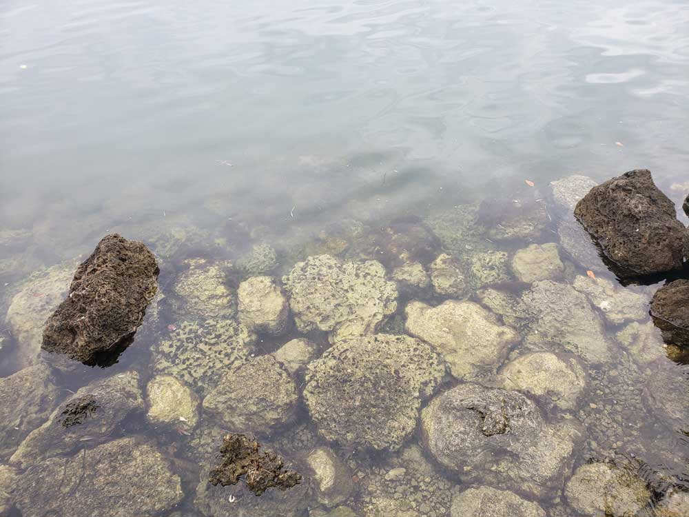
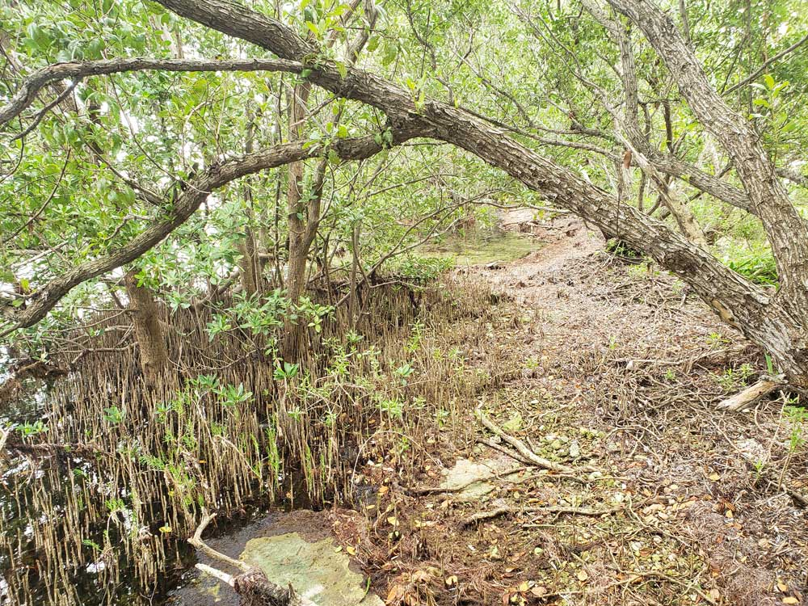
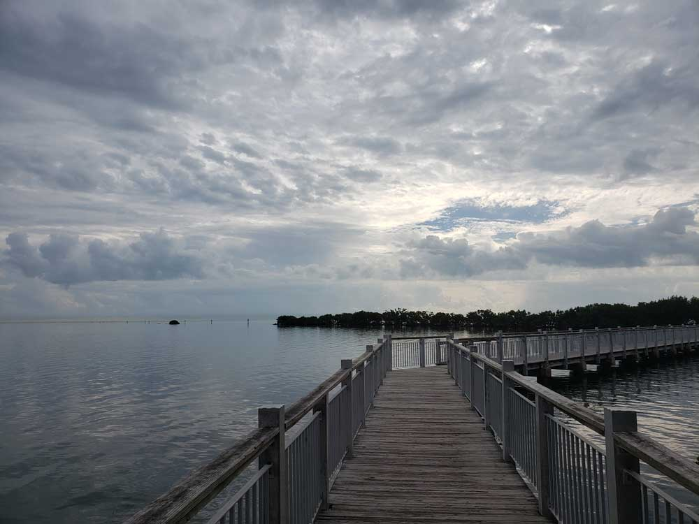
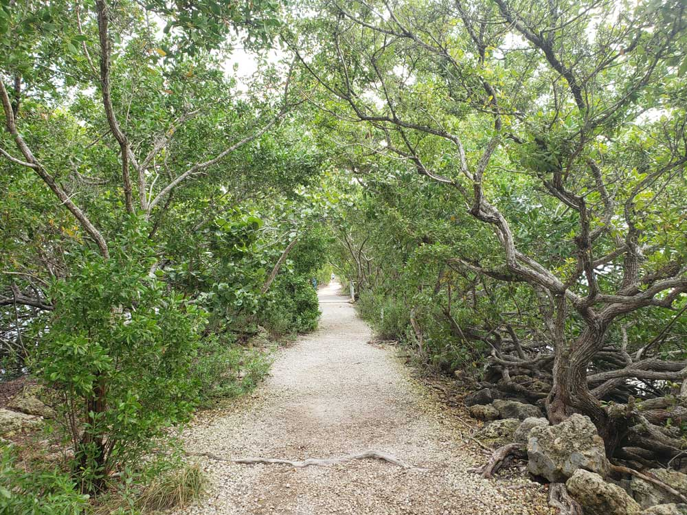
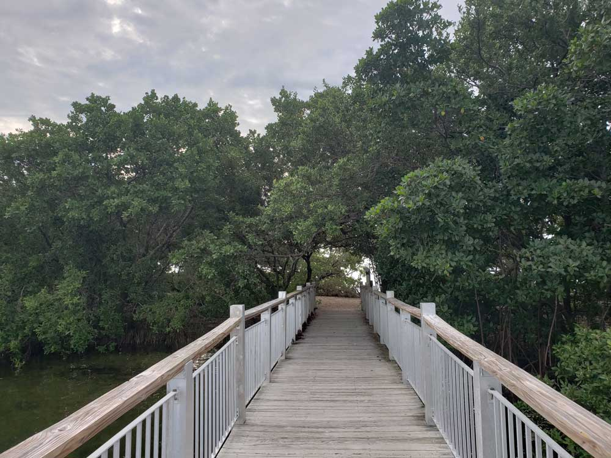
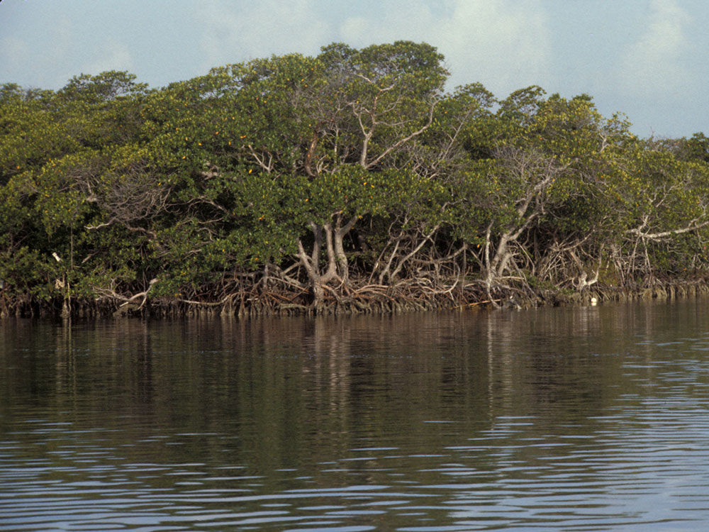

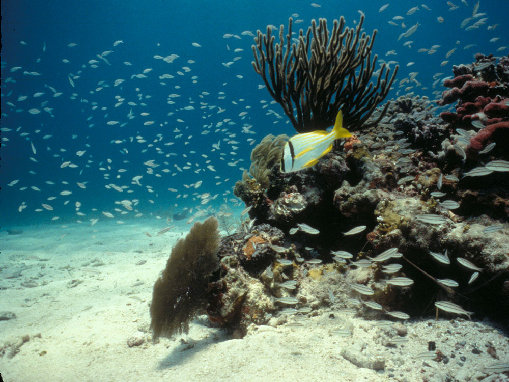

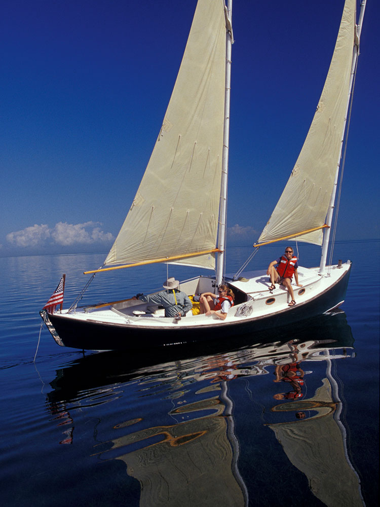

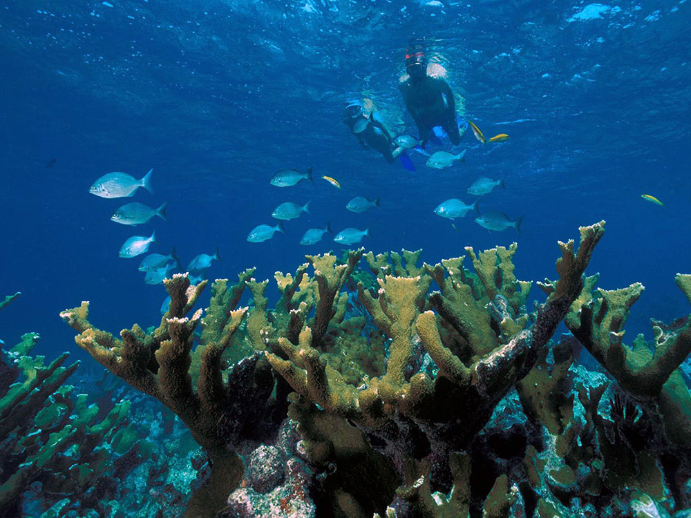